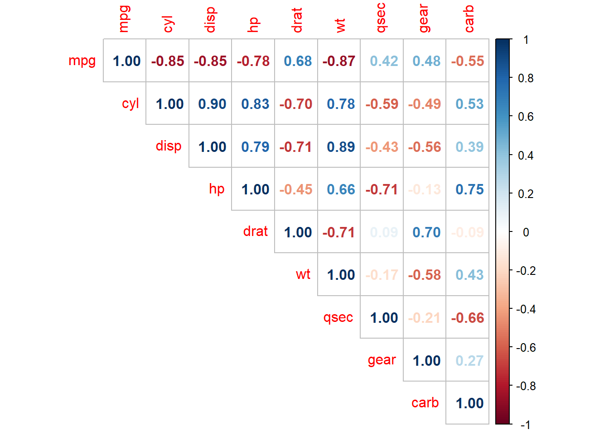
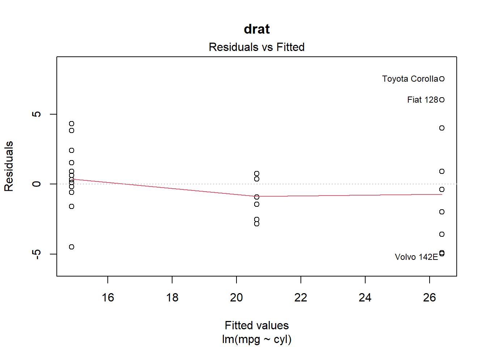
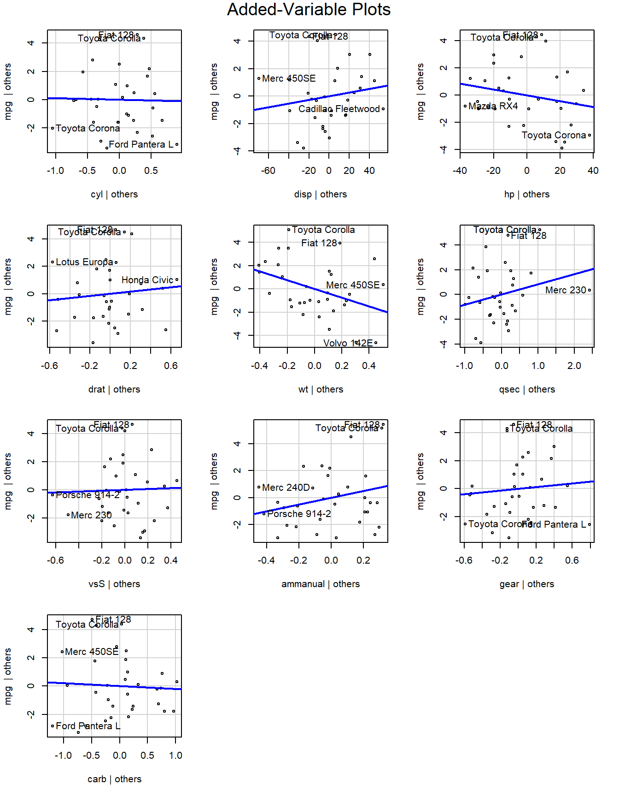
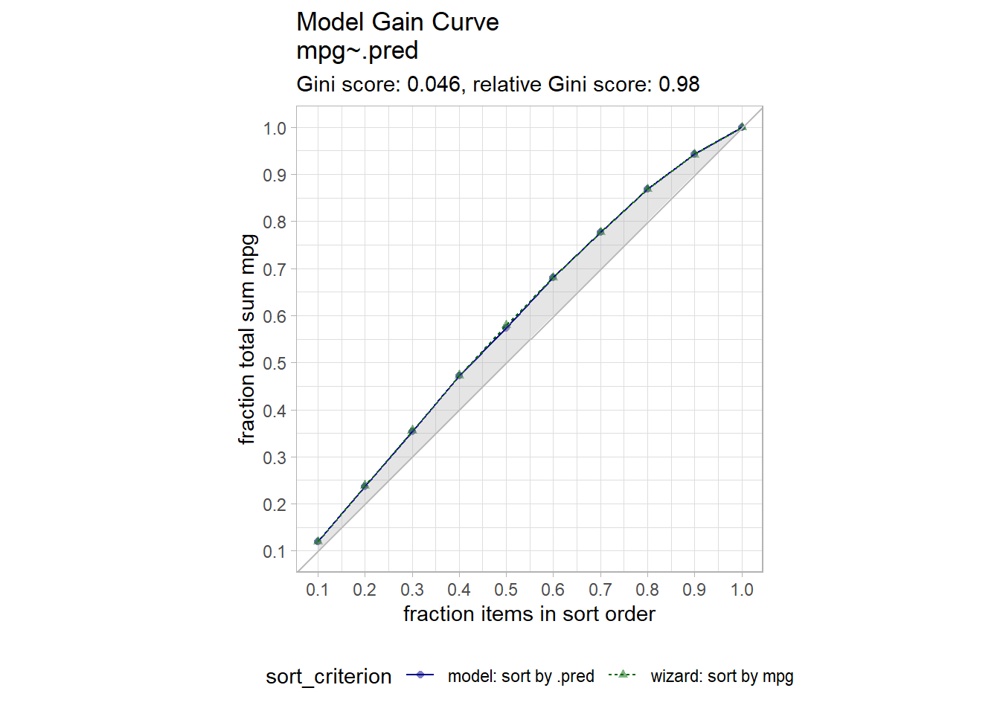

Chapter 1 Ordinary Least Squares
These notes rely on PSU1, STHDA2, and (Molnar 2020),
The population regression model \(E(Y) = X \beta\) summarizes the trend between the predictors and the mean responses. The individual responses are assumed to be normally distributed about the population regression, \(y_i = X_i \beta + \epsilon_i\) with varying mean, but constant variance, \(y_i \sim N(\mu_i, \sigma^2).\) Equivalently, the model presumes a linear relationship between \(y\) and \(X\) with residuals \(\epsilon\) that are independent normal random variables with mean zero and constant variance \(\sigma^2\). Estimate the population regression model coefficients as \(\hat{y} = X \hat{\beta}\), and the population variance as \(\hat{\sigma}^2\). The most common method of estimating the \(\beta\) coefficients and \(\sigma\) is ordinary least squares (OLS). OLS minimizes the sum of squared residuals from a random sample. The predicted values vary about the actual value, \(e_i = y_i - \hat{y}_i\), where \(\hat{y}_i = X_i \hat{\beta}\).
The OLS model is the best linear unbiased estimator (BLUE) if the residuals are independent random variables normally distributed with mean zero and constant variance. Recall these conditions with the LINE pneumonic: Linear, Independent, Normal, and Equal.
Linearity. The explanatory variables are each linearly related to the response variable: \(E(\epsilon | X_j) = 0\).
Independence. The residuals are unrelated to each other. Independence is violated by repeated measurements and temporal regressors.
Normality. The residuals are normally distributed: \(\epsilon|X \sim N(0, \sigma^2I)\).
Equal Variances. The variance of the residuals is constant (homoscedasticity): \(E(\epsilon \epsilon' | X) = \sigma^2I\)
Additionally, there should be little multicollinearity among the explanatory variables.
If the modeling objective is inference, fit the model with the full data set, evaluate the model fit, and interpret the parameter estimates. If the objective is prediction, fit the model with a partitioned train/test data set, cross-validate the fit with the test set, then deploy the model. Both are covered below.
1.1 Parameter Estimation
There are two model parameters to estimate: \(\hat{\beta}\) estimates the coefficient vector \(\beta\), and \(\hat{\sigma}\) estimates the variance of the residuals along the regression line. Derive \(\hat{\beta}\) by minimizing the sum of squared residuals \(SSE = (y - X \hat{\beta})' (y - X \hat{\beta})\). The result is
\[\hat{\beta} = (X'X)^{-1}X'y.\]
The residual standard error (RSE) estimates the sample deviation around the population regression line. (Think of each value of \(X\) along the regression line as a subpopulation with mean \(y_i\) and variance \(\sigma^2\). This variance is assumed to be the same for all \(X\).)
\[\hat{\sigma} = \sqrt{(n-k-1)^{-1} e'e}.\]
The standard error for the coefficient estimators is the square root of the error variance divided by \((X'X)\).
\[SE(\hat{\beta}) = \sqrt{\hat{\sigma}^2 (X'X)^{-1}}.\]
Example
Dataset mtcars contains response variable fuel consumption mpg and 10 aspects of automobile design and performance for 32 automobiles. What is the relationship between the response and its predictors?
data("mtcars")
mt_cars <- mtcars %>%
mutate(
vs = factor(vs, levels = c(0, 1), labels = c("V", "S")),
am = factor(am, levels = c(0, 1), labels = c("automatic", "manual"))
)
glimpse(mt_cars)## Rows: 32
## Columns: 11
## $ mpg <dbl> 21.0, 21.0, 22.8, 21.4, 18.7, 18.1, 14.3, 24.4, 22.8, 19.2, 17.8,…
## $ cyl <dbl> 6, 6, 4, 6, 8, 6, 8, 4, 4, 6, 6, 8, 8, 8, 8, 8, 8, 4, 4, 4, 4, 8,…
## $ disp <dbl> 160.0, 160.0, 108.0, 258.0, 360.0, 225.0, 360.0, 146.7, 140.8, 16…
## $ hp <dbl> 110, 110, 93, 110, 175, 105, 245, 62, 95, 123, 123, 180, 180, 180…
## $ drat <dbl> 3.90, 3.90, 3.85, 3.08, 3.15, 2.76, 3.21, 3.69, 3.92, 3.92, 3.92,…
## $ wt <dbl> 2.620, 2.875, 2.320, 3.215, 3.440, 3.460, 3.570, 3.190, 3.150, 3.…
## $ qsec <dbl> 16.46, 17.02, 18.61, 19.44, 17.02, 20.22, 15.84, 20.00, 22.90, 18…
## $ vs <fct> V, V, S, S, V, S, V, S, S, S, S, V, V, V, V, V, V, S, S, S, S, V,…
## $ am <fct> manual, manual, manual, automatic, automatic, automatic, automati…
## $ gear <dbl> 4, 4, 4, 3, 3, 3, 3, 4, 4, 4, 4, 3, 3, 3, 3, 3, 3, 4, 4, 4, 3, 3,…
## $ carb <dbl> 4, 4, 1, 1, 2, 1, 4, 2, 2, 4, 4, 3, 3, 3, 4, 4, 4, 1, 2, 1, 1, 2,…The correlation matrix of the numeric variables shows wt has the strongest association with mpg (r = -0.87) followed by disp (r = -0.85) and hp (r = -0.78). drat is moderately correlated (r = 0.68), and qsec is weakly correlated (r = 0.42). Many predictors are strongly correlated with each other.
mt_cars %>%
select(where(is.numeric)) %>%
cor() %>%
corrplot::corrplot(type = "upper", method = "number")
Boxplots of the categorical variables reveal differences in levels.
mt_cars %>%
select(mpg, where(is.factor)) %>%
mutate(across(where(is.factor), as.character)) %>%
pivot_longer(cols = -mpg) %>%
ggplot(aes(x = value, y = mpg)) +
geom_boxplot() +
facet_wrap(facets = vars(name), scales = "free_x")
Fit a population model to the predictors.
##
## Call:
## lm(formula = mpg ~ ., data = mt_cars)
##
## Residuals:
## Min 1Q Median 3Q Max
## -3.4506 -1.6044 -0.1196 1.2193 4.6271
##
## Coefficients:
## Estimate Std. Error t value Pr(>|t|)
## (Intercept) 12.30337 18.71788 0.657 0.5181
## cyl -0.11144 1.04502 -0.107 0.9161
## disp 0.01334 0.01786 0.747 0.4635
## hp -0.02148 0.02177 -0.987 0.3350
## drat 0.78711 1.63537 0.481 0.6353
## wt -3.71530 1.89441 -1.961 0.0633 .
## qsec 0.82104 0.73084 1.123 0.2739
## vsS 0.31776 2.10451 0.151 0.8814
## ammanual 2.52023 2.05665 1.225 0.2340
## gear 0.65541 1.49326 0.439 0.6652
## carb -0.19942 0.82875 -0.241 0.8122
## ---
## Signif. codes: 0 '***' 0.001 '**' 0.01 '*' 0.05 '.' 0.1 ' ' 1
##
## Residual standard error: 2.65 on 21 degrees of freedom
## Multiple R-squared: 0.869, Adjusted R-squared: 0.8066
## F-statistic: 13.93 on 10 and 21 DF, p-value: 3.793e-07summary() shows \(\hat{\beta}\) as Estimate, \(SE({\hat{\beta}})\) as Std. Error, and \(\hat{\sigma}\) as Residual standard error. You can manually perform these calculations using matrix algebra3. Recall, \(\hat{\beta} = (X'X)^{-1}X'y\).
## [,1]
## (Intercept) 12.30337416
## cyl -0.11144048
## disp 0.01333524
## hp -0.02148212
## drat 0.78711097
## wt -3.71530393
## qsec 0.82104075
## vsS 0.31776281
## ammanual 2.52022689
## gear 0.65541302
## carb -0.19941925The residual standard error is \(\hat{\sigma} = \sqrt{(n-k-1)^{-1} \hat{e}'\hat{e}}\).
n <- nrow(X)
k <- ncol(X) - 1 # exclude the intercept term
y_hat <- X %*% beta_hat
sse <- sum((y - y_hat)^2)
(dof <- n - k - 1)
## [1] 21
(rse <- sqrt(sse / dof))
## [1] 2.650197The standard errors of the coefficients are \(SE(\hat{\beta}) = \sqrt{\hat{\sigma}^2 (X'X)^{-1}}\).
## (Intercept) cyl disp hp drat wt
## 18.71788443 1.04502336 0.01785750 0.02176858 1.63537307 1.89441430
## qsec vsS ammanual gear carb
## 0.73084480 2.10450861 2.05665055 1.49325996 0.828752501.2 Model Assumptions
The linear regression model assumes the relationship between the predictors and the response is linear and the residuals are independent random variables normally distributed with mean zero and constant variance. Additionally, you will want to check for multicollinearity in the predictors because it can produce unreliable coefficient estimates and predicted values. The plot() function produces a set of diagnostic plots to test the assumptions.
Use the Residuals vs Fitted plot, \(e \sim \hat{Y}\), to test the linearity and equal error variances assumptions. The plot also identifies outliers. The polynomial trend line should show that the residuals vary around \(e = 0\) in a straight horizontal line (linearity). The residuals should have random scatter in a band of constant width around 0, and no fan shape at the low and high ends (equal variances). All tests and intervals are sensitive to the equal variances condition. The plot also reveals multicollinearity. If the residuals and fitted values are correlated, multicollinearity may be a problem.
Use the Q-Q Residuals plot (aka, residuals normal probability plot) to test the normality assumption. It plots the theoretical percentiles of the normal distribution versus the observed sample percentiles. It should be approximately linear with no bow-shaped deviations. Sometimes this normality check fails when the linearity check fails, so check for linearity first. Parameter estimation is not sensitive to the normality assumption, but prediction intervals are.
Use the Scale-Location plot, \(\sqrt{e / sd(e)} \sim \hat{y}\), to test for equal variance (aka, homoscedasticity). The square root of the absolute value of the residuals should be spread equally along a horizontal line.
The Residuals vs Leverage plot identifies influential observations. The standardized residuals should fall within the 95% probability band.
These diagnostics are usually sufficient. If any of the diagnostics fail, you can re-specify the model or transform the data.
Consider the linearity assumption. The explanatory variables should each be linearly related to the response variable: \(E(\epsilon | X_j) = 0\). The Residuals vs Fitted plot tested this overall. A curved pattern in the residuals indicates a curvature in the relationship between the response and the predictor that is not explained by the model. There are other tests of linearity. The full list:
- Residuals vs fits plot \((e \sim \hat{Y})\) should randomly vary around 0.
- Observed vs fits plot \((Y \sim \hat{Y})\) should be symmetric along the 45-degree line.
- Each \((Y \sim X_j )\) plot should have correlation \(\rho \sim 1\).
- Each \((e \sim X_j)\) plot should exhibit no pattern.
The diagnostic plots above look pretty good except for some evidence of heteroskedasticity at the upper end of predicted values. You might drill into the linearity condition to start. Start with plots of \((Y \sim X_j )\) - are the correlation coefficients ~1? Yes, all but qsec have correlations over .6.
x <- mt_cars %>%
select(where(is.numeric)) %>%
pivot_longer(-mpg)
x_cor <- x %>%
nest(.by = name) %>%
mutate(val_corr = map_dbl(data, ~cor(.$mpg, .$value)))
x %>%
inner_join(x_cor, by = join_by(name)) %>%
mutate(name = glue::glue("{name}, r = {comma(val_corr, .01)}")) %>%
ggplot(aes(x = value, y = mpg)) +
geom_point() +
geom_smooth(method = "lm", formula = "y ~ x", se = FALSE) +
facet_wrap(facets = vars(name), scales = "free_x") +
labs(title = "Response vs Predictor")
How about \((e \sim X_j)\)? disp has a wave pattern; hp is u-shaped; qsec has increase variance in the middle.
mt_cars %>%
select(where(is.numeric)) %>%
pivot_longer(-mpg) %>%
nest(.by = name) %>%
mutate(
fit = map(data, ~lm(mpg ~ value, data = .)),
aug = map(fit, broom::augment)
) %>%
unnest(aug) %>%
ggplot(aes(x = value, y = .resid)) +
geom_point() +
geom_smooth(method = "lm", formula = "y ~ x", se = FALSE) +
facet_wrap(facets = vars(name), scales = "free_x") +
labs(title = "Residuals vs Predictor")
If the linearity condition fails, change the functional form of the model with non-linear transformations of the explanatory variables. A common way to do this is with Box-Cox transformations.
\[w_t = \begin{cases} \begin{array}{l} log(y_t) \quad \quad \lambda = 0 \\ (y_t^\lambda - 1) / \lambda \quad \text{otherwise} \end{array} \end{cases}\]
\(\lambda\) can take any value, but values near the following yield familiar transformations.
- \(\lambda = 1\) yields no substantive transformation.
- \(\lambda = 0.5\) is a square root plus linear transformation.
- \(\lambda = 0.333\) is a cube root plus linear transformation.
- \(\lambda = 0\) is a natural log transformation.
- \(\lambda = -1\) is an inverse transformation.
A common source of non-linearity is skewed response or predictor variables (see discussion here). mt_cars has some skewed variables.
mt_cars %>%
select(where(is.numeric)) %>%
pivot_longer(cols = everything()) %>%
ggplot(aes(x = value)) +
geom_histogram() +
facet_wrap(facets = vars(name), scales = "free_x") +
labs(title = "Histogram of numeric vars")
hp has the most skew, cyl the least.
## mpg cyl disp hp drat wt qsec
## 0.6404399 -0.1831287 0.4002724 0.7614356 0.2788734 0.4437855 0.3870456
## gear carb
## 0.5546495 1.1021304Compare the residuals vs fitted plots for each variable. Here is hp.
and here is cyl

Box-Cox transform the numeric variables. The skew is reduced.
rec <- recipe(~., data = mt_cars)
mt_cars_boxcox <- rec %>%
step_BoxCox(all_numeric()) %>%
prep(training = mt_cars) %>%
bake(new_data = NULL)## Warning: Fewer than `num_unique` values in selected variable.
## Fewer than `num_unique` values in selected variable.## Warning: No Box-Cox transformation could be estimated for: `cyl`, `gear`## mpg cyl disp hp drat wt
## -0.001040985 -0.183128652 -0.056140870 -0.011871603 0.003121934 -0.010164785
## qsec gear carb
## -0.000842791 0.554649467 -0.018867279The diagnostic plot for hp looks much better (notice the much smaller y-axis).

Did this create a better fitting model? A little: R^2 increased from .87 to .89.
# Before
fit %>% glance()
## # A tibble: 1 × 12
## r.squared adj.r.squared sigma statistic p.value df logLik AIC BIC
## <dbl> <dbl> <dbl> <dbl> <dbl> <dbl> <dbl> <dbl> <dbl>
## 1 0.869 0.807 2.65 13.9 0.000000379 10 -69.9 164. 181.
## # ℹ 3 more variables: deviance <dbl>, df.residual <int>, nobs <int>
# After
fit_boxcox <- lm(mpg ~ ., data = mt_cars_boxcox %>% select(-c(gear, carb)))
fit_boxcox %>% glance()
## # A tibble: 1 × 12
## r.squared adj.r.squared sigma statistic p.value df logLik AIC BIC
## <dbl> <dbl> <dbl> <dbl> <dbl> <dbl> <dbl> <dbl> <dbl>
## 1 0.893 0.855 0.124 23.9 0.00000000215 8 26.8 -33.5 -18.9
## # ℹ 3 more variables: deviance <dbl>, df.residual <int>, nobs <int>Here’s a look at the diagnostic plots for the new model.

How about those linearity tests? Most look a little better.
x <- mt_cars_boxcox %>%
select(where(is.numeric)) %>%
pivot_longer(-mpg)
x_cor <- x %>%
nest(.by = name) %>%
mutate(val_corr = map_dbl(data, ~cor(.$mpg, .$value)))
x %>%
inner_join(x_cor, by = join_by(name)) %>%
mutate(name = glue::glue("{name}, r = {comma(val_corr, .01)}")) %>%
ggplot(aes(x = value, y = mpg)) +
geom_point() +
geom_smooth(method = "lm", formula = "y ~ x", se = FALSE) +
facet_wrap(facets = vars(name), scales = "free_x") +
labs(title = "Response vs Predictor - Box-Cox Transformed")
How about \((e \sim X_j)\)? Much better
mt_cars_boxcox %>%
select(where(is.numeric)) %>%
pivot_longer(-mpg) %>%
nest(.by = name) %>%
mutate(
fit = map(data, ~lm(mpg ~ value, data = .)),
aug = map(fit, broom::augment)
) %>%
unnest(aug) %>%
ggplot(aes(x = value, y = .resid)) +
geom_point() +
geom_smooth(method = "lm", formula = "y ~ x", se = FALSE) +
facet_wrap(facets = vars(name), scales = "free_x") +
labs(title = "Residuals vs Predictor - Box-Cox Transformed")
1.2.1 Multicollinearity
The multicollinearity condition is violated when two or more of the predictors in a regression model are correlated. Muticollinearity can occur for structural reasons, as when one variable is a transformation of another variable, or for data reasons, as occurs in observational studies. Multicollinearity is a problem because it inflates the variances of the estimated coefficients, resulting in larger confidence intervals.
When predictor variables are correlated, the precision of their estimated regression coefficients decreases. The usual interpretation of a slope coefficient as the change in the mean response for each additional unit increase in the predictor when all the other predictors are held constant breaks down because changing one predictor necessarily changes the others.
The residuals vs fits plot \((\epsilon \sim \hat{Y})\) should have correlation \(\rho \sim 0\). A correlation matrix is helpful for picking out the correlation strengths. A good rule of thumb is correlation coefficients should be less than 0.80. However, this test may not work when a variable is correlated with a function of other variables. A model with multicollinearity may have a significant F-test with insignificant individual slope estimator t-tests. Another way to detect multicollinearity is by calculating variance inflation factors (VIF). The predictor variance \(Var(\hat{\beta_k})\) increases by a factor
\[\mathrm{VIF}_k = \frac{1}{1 - R_k^2}\]
where \(R_k^2\) is the \(R^2\) of a regression of the \(k^{th}\) predictor on the remaining predictors. A \(VIF_k\) of \(1\) indicates no inflation (no correlation). A \(VIF_k >= 4\) warrants investigation. A \(VIF_k >= 10\) requires correction.
Does the model mpg ~ . exhibit multicollinearity? Recall that the correlation matrix had several correlated predictors. E.g., disp is strongly correlated with wt (r = 0.89) and hp (r = 0.79). How about the VIFs?
## cyl disp hp drat wt qsec vs am
## 13.793609 18.078964 9.075071 3.401503 9.456176 9.117931 4.866017 4.432487Three predictors have VIFs greater than 10 (cyl, disp, and wt). One way to address multicollinearity is removing one or more of the violating predictors from the regression model. Try removing disp.
## cyl hp drat wt qsec vs am gear
## 14.662069 9.587920 4.112070 8.639359 9.590966 5.034117 4.938979 5.684508
## carb
## 5.046840Removing disp reduced the VIFs of the other variables, but cyl is still above 10. It may be worth dropping it from the model too. The model summary shows that wt is the only significant predictor.
##
## Call:
## lm(formula = mpg ~ . - disp, data = mt_cars_boxcox)
##
## Residuals:
## Min 1Q Median 3Q Max
## -0.174183 -0.081250 -0.005585 0.069938 0.245160
##
## Coefficients:
## Estimate Std. Error t value Pr(>|t|)
## (Intercept) 1.57267 2.97595 0.528 0.60247
## cyl 0.02864 0.04662 0.614 0.54527
## hp -0.13295 0.08959 -1.484 0.15200
## drat 0.13119 0.32429 0.405 0.68972
## wt -0.35353 0.12046 -2.935 0.00767 **
## qsec 1.00706 1.12656 0.894 0.38104
## vsS -0.03579 0.09679 -0.370 0.71510
## ammanual -0.01315 0.09684 -0.136 0.89324
## gear 0.09776 0.07026 1.391 0.17806
## carb -0.06806 0.07516 -0.906 0.37498
## ---
## Signif. codes: 0 '***' 0.001 '**' 0.01 '*' 0.05 '.' 0.1 ' ' 1
##
## Residual standard error: 0.1211 on 22 degrees of freedom
## Multiple R-squared: 0.9015, Adjusted R-squared: 0.8612
## F-statistic: 22.37 on 9 and 22 DF, p-value: 4.385e-091.3 Prediction
The standard error in the expected value of \(\hat{y}\) at some new set of predictors \(X_n\) is
\[SE(\mu_\hat{y}) = \sqrt{\hat{\sigma}^2 (X_n (X'X)^{-1} X_n')}.\]
The standard error increases the further \(X_n\) is from \(\bar{X}\). If \(X_n = \bar{X}\), the equation reduces to \(SE(\mu_\hat{y}) = \sigma / \sqrt{n}\). If \(n\) is large, or the predictor values are spread out, \(SE(\mu_\hat{y})\) will be relatively small. The \((1 - \alpha)\%\) confidence interval is \(\hat{y} \pm t_{\alpha / 2} SE(\mu_\hat{y})\).
The standard error in the predicted value of \(\hat{y}\) at some \(X_{new}\) is
\[SE(\hat{y}) = SE(\mu_\hat{y})^2 + \sqrt{\hat{\sigma}^2}.\]
Notice the standard error for a predicted value is always greater than the standard error of the expected value. The \((1 - \alpha)\%\) prediction interval is \(\hat{y} \pm t_{\alpha / 2} SE(\hat{y})\).
Calculate confidence interval and prediction interval for mpg for predictor values at their mean.
new_data <- mt_cars %>%
summarize(across(where(is.numeric), mean)) %>%
mutate(vs = "S", am = "manual")
list(
Confidence = predict.lm(fit, newdata = new_data, interval = "confidence"),
Prediction = predict.lm(fit, newdata = new_data, interval = "prediction")
)## $Confidence
## fit lwr upr
## 1 21.76575 17.75562 25.77589
##
## $Prediction
## fit lwr upr
## 1 21.76575 14.94985 28.58166Verify this by calculating \(SE(\mu_\hat{y}) = \sqrt{\hat{\sigma}^2 (X_{new} (X'X)^{-1} X_{new}')}\) and \(SE(\hat{y}) = SE(\mu_\hat{y})^2 + \sqrt{\hat{\sigma}^2}\) with matrix algebra.
X2 <- lapply(data.frame(model.matrix(fit)), mean) %>% unlist() %>% t()
X2[8] <- 1
X2[9] <- 1
y_exp <- sum(fit$coefficients * as.numeric(X2))
# Standard error of expected and predicted values
se_y_exp <- as.numeric(sqrt(rse^2 * X2 %*% solve(t(X) %*% X) %*% t(X2)))
se_y_hat <- sqrt(rse^2 + se_y_exp^2)
# Margins of error
t_crit <- qt(p = .05 / 2, df = n - k - 1, lower.tail = FALSE)
me_exp <- t_crit * se_y_exp
me_hat <- t_crit * se_y_hat
list(
Confidence = c(fit = y_exp, lwr = y_exp - me_exp, upr = y_exp + me_exp),
Prediction = c(fit = y_exp, lwr = y_exp - me_hat, upr = y_exp + me_hat)
)## $Confidence
## fit lwr upr
## 21.76575 17.75562 25.77589
##
## $Prediction
## fit lwr upr
## 21.76575 14.94985 28.581661.4 Inference
Draw conclusions about the significance of the coefficient estimates with the t-test and/or F-test.
1.4.1 t-Test
By assumption, the residuals are normally distributed, so the Z-test statistic could evaluate the parameter estimators,
\[Z = \frac{\hat{\beta} - \beta_0}{\sqrt{\sigma^2 (X'X)^{-1}}}\]
where \(\beta_0\) is the null-hypothesized value, usually 0. \(\sigma\) is unknown, but \(\frac{\hat{\sigma}^2 (n - k)}{\sigma^2} \sim \chi^2\). The ratio of the normal distribution divided by the adjusted chi-square \(\sqrt{\chi^2 / (n - k)}\) is t-distributed,
\[t = \frac{\hat{\beta} - \beta_0}{\sqrt{\hat{\sigma}^2 (X'X)^{-1}}} = \frac{\hat{\beta} - \beta_0}{SE(\hat{\beta})}\]
The \((1 - \alpha)\) confidence intervals are \(CI = \hat{\beta} \pm t_{\alpha / 2, df} SE(\hat{\beta})\) with p-value equaling the probability of measuring a \(t\) of that extreme, \(p = P(t > |t|)\). For a one-tail test, divide the reported p-value by two. The \(SE(\hat{\beta})\) decreases with i) a better fitting regression line (smaller \(\hat{\sigma}^2\)), ii) greater variation in the predictor (larger \(X'X\)), and iii) larger sample size (larger n).
The summary() output shows the t values and probabilities in the t value and Pr(>|t|) columns. Verify this using matrix algebra to solve \(t = \frac{(\hat{\beta} - \beta_1)}{SE(\hat{\beta})}\) with \(\beta_1 = 0\). The \((1 - \alpha)\) confidence interval is \(CI = \hat{\beta} \pm t_{\alpha / 2, df} SE(\hat{\beta})\).
t <- beta_hat / se_beta_hat
p_value <- pt(q = abs(t), df = n - k - 1, lower.tail = FALSE) * 2
t_crit <- qt(p = .05 / 2, df = n - k - 1, lower.tail = FALSE)
lcl = beta_hat - t_crit * se_beta_hat
ucl = beta_hat + t_crit * se_beta_hat
data.frame(beta = round(beta_hat, 4),
se = round(se_beta_hat, 4),
t = round(t, 4),
p = round(p_value, 4),
lcl = round(lcl,4),
ucl = round(ucl, 4)) %>% knitr::kable()| beta | se | t | p | lcl | ucl | |
|---|---|---|---|---|---|---|
| (Intercept) | 12.3034 | 18.7179 | 0.6573 | 0.5181 | -26.6226 | 51.2293 |
| cyl | -0.1114 | 1.0450 | -0.1066 | 0.9161 | -2.2847 | 2.0618 |
| disp | 0.0133 | 0.0179 | 0.7468 | 0.4635 | -0.0238 | 0.0505 |
| hp | -0.0215 | 0.0218 | -0.9868 | 0.3350 | -0.0668 | 0.0238 |
| drat | 0.7871 | 1.6354 | 0.4813 | 0.6353 | -2.6138 | 4.1881 |
| wt | -3.7153 | 1.8944 | -1.9612 | 0.0633 | -7.6550 | 0.2243 |
| qsec | 0.8210 | 0.7308 | 1.1234 | 0.2739 | -0.6988 | 2.3409 |
| vsS | 0.3178 | 2.1045 | 0.1510 | 0.8814 | -4.0588 | 4.6943 |
| ammanual | 2.5202 | 2.0567 | 1.2254 | 0.2340 | -1.7568 | 6.7973 |
| gear | 0.6554 | 1.4933 | 0.4389 | 0.6652 | -2.4500 | 3.7608 |
| carb | -0.1994 | 0.8288 | -0.2406 | 0.8122 | -1.9229 | 1.5241 |
1.4.2 F-Test
The F-test for the model is a test of the null hypothesis that none of the independent variables linearly predict the dependent variable, that is, the model parameters are jointly zero: \(H_0 : \beta_1 = \ldots = \beta_k = 0\). The regression mean sum of squares \(MSR = \frac{(\hat{y} - \bar{y})'(\hat{y} - \bar{y})}{k-1}\) and the error mean sum of squares \(MSE = \frac{\hat{\epsilon}'\hat{\epsilon}}{n-k}\) are each chi-square variables. Their ratio has an F distribution with \(k - 1\) numerator degrees of freedom and \(n - k\) denominator degrees of freedom. The F statistic can also be expressed in terms of the coefficient of correlation \(R^2 = \frac{MSR}{MST}\).
\[F(k - 1, n - k) = \frac{MSR}{MSE} = \frac{R^2}{1 - R^2} \frac{n-k}{k-1}\]
MSE is \(\sigma^2\). If \(H_0\) is true, that is, there is no relationship between the predictors and the response, then \(MSR\) is also equal to \(\sigma^2\), so \(F = 1\). As \(R^2 \rightarrow 1\), \(F \rightarrow \infty\), and as \(R^2 \rightarrow 0\), \(F \rightarrow 0\). F increases with \(n\) and decreases with \(k\).
What is the probability that all parameters are jointly equal to zero? The F-statistic is presented at the bottom of the summary() function. Verify this manually.
ssr <- sum((fit$fitted.values - mean(mt_cars$mpg))^2)
sse <- sum(fit$residuals^2)
sst <- sum((fit$mpg - mean(mt_cars$mpg))^2)
msr <- ssr / k
mse <- sse / (n - k - 1)
f = msr / mse
p_value <- pf(q = f, df1 = k, df2 = n - k - 1, lower.tail = FALSE)
cat("F-statistic: ", round(f, 4), " on 3 and 65 DF, p-value: ", p_value)## F-statistic: 13.9325 on 3 and 65 DF, p-value: 3.793152e-07There is sufficient evidence (F = 17.35, p < .0001) to reject \(H_0\) that the parameter estimators are jointly equal to zero.
aov() calculates the sequential sum of squares. The regression sum of squares SSR for mpg ~ cyl is 817.7. Adding disp to the model increases SSR by 37.6. Adding hp to the model increases SSR by 9.4. It would seem that hp does not improve the model.
## Df Sum Sq Mean Sq F value Pr(>F)
## cyl 1 817.7 817.7 116.425 5.03e-10 ***
## disp 1 37.6 37.6 5.353 0.03091 *
## hp 1 9.4 9.4 1.334 0.26103
## drat 1 16.5 16.5 2.345 0.14064
## wt 1 77.5 77.5 11.031 0.00324 **
## qsec 1 3.9 3.9 0.562 0.46166
## vs 1 0.1 0.1 0.018 0.89317
## am 1 14.5 14.5 2.061 0.16586
## gear 1 1.0 1.0 0.138 0.71365
## carb 1 0.4 0.4 0.058 0.81218
## Residuals 21 147.5 7.0
## ---
## Signif. codes: 0 '***' 0.001 '**' 0.01 '*' 0.05 '.' 0.1 ' ' 1Order matters. Had we started with disp, then added hp we would find both estimators were significant.
## Df Sum Sq Mean Sq F value Pr(>F)
## disp 1 808.9 808.9 115.168 5.55e-10 ***
## hp 1 33.7 33.7 4.793 0.04001 *
## cyl 1 22.1 22.1 3.150 0.09043 .
## drat 1 16.5 16.5 2.345 0.14064
## wt 1 77.5 77.5 11.031 0.00324 **
## qsec 1 3.9 3.9 0.562 0.46166
## vs 1 0.1 0.1 0.018 0.89317
## am 1 14.5 14.5 2.061 0.16586
## gear 1 1.0 1.0 0.138 0.71365
## carb 1 0.4 0.4 0.058 0.81218
## Residuals 21 147.5 7.0
## ---
## Signif. codes: 0 '***' 0.001 '**' 0.01 '*' 0.05 '.' 0.1 ' ' 11.5 Interpretation
A plot of the standardized coefficients shows the relative importance of each predictor. The distance the coefficients are from zero shows how much a change in a standard deviation of the predictor changes the mean of the predicted value. The CI shows the precision. The plot shows not only which variables are significant, but also which are important.
mt_cars_scaled <- mt_cars %>% mutate(across(where(is.numeric), scale))
fit_scaled <- lm(mpg ~ ., mt_cars_scaled)
fit_scaled %>%
tidy() %>%
mutate(
lwr = estimate - qt(.05/2, fit_scaled$df.residual) * std.error,
upr = estimate + qt(.05/2, fit_scaled$df.residual) * std.error,
) %>%
filter(term != "(Intercept)") %>%
ggplot() +
geom_point(aes(y = term, x = estimate)) +
geom_errorbar(aes(y = term, xmin = lwr, xmax = upr), width = .2) +
geom_vline(xintercept = 0, linetype = 4) +
labs(title = "Model Feature Importance", x = "Standardized Weight", y = NULL) 
The added variable plot shows the bivariate relationship between \(Y\) and \(X_i\) after accounting for the other variables. For example, the partial regression plots of y ~ x1 + x2 + x3 would plot the residuals of y ~ x2 + x3 vs x1, and so on.

1.6 Model Validation
Evaluate predictive accuracy by training the model on a training data set and testing on a test data set.
1.6.1 Accuracy Metrics
The most common measures of model fit are R-squared, Adjusted R-squared, RMSE, RSE, MAE, AIC, AICc, BIC, and Mallow’s Cp.
1.6.2 R-Squared
The coefficient of determination (R-squared) is the percent of total variation in the response variable that is explained by the regression line.
\[R^2 = \frac{RSS}{SST} = 1 - \frac{SSE}{SST}\]
where \(SSE = \sum_{i=1}^n{(y_i - \hat{y}_i)^2}\) is the sum squared differences between the predicted and observed value, \(SST = \sum_{i = 1}^n{(y_i - \bar{y})^2}\) is the sum of squared differences between the observed and overall mean value, and \(RSS = \sum_{i=1}^n{(\hat{y}_i - \bar{y})^2}\) is the sum of squared differences between the predicted and overall mean “no-relationship line” value. At the extremes, \(R^2 = 1\) means all data points fall perfectly on the regression line - the predictors account for all variation in the response; \(R^2 = 0\) means the regression line is horizontal at \(\bar{y}\) - the predictors account for none of the variation in the response. In the simple case of a single predictor variable, \(R^2\) equals the squared correlation between \(x\) and \(y\), \(Cor(x,y)\).
ssr <- sum((fit$fitted.values - mean(mt_cars$mpg))^2)
sse <- sum(fit$residuals^2)
sst <- sum((mt_cars$mpg - mean(mt_cars$mpg))^2)
(r2 <- ssr / sst)
## [1] 0.8690158
(r2 <- 1 - sse / sst)
## [1] 0.8690158
(r2 <- summary(fit)$r.squared)
## [1] 0.8690158The sums of squares are the same thing as the variances multiplied by the degrees of freedom.
ssr2 <- var(fitted(fit)) * (n - 1)
sse2 <- var(residuals(fit)) * (n - 1)
sst2 <- var(mt_cars$mpg) * (n - 1)
ssr2 / sst2## [1] 0.8690158\(R^2\) is also equal to the correlation between the fitted value and observed values, \(R^2 = Cor(Y, \hat{Y})^2\).
## [1] 0.8690158R-squared is proportional to the the variance in the response, SST. Given a constant percentage error in predictions, a test set with relatively low variation in the reponse will have a lower R-squared. Conversely, test sets with large variation, e.g., housing data with home sale ranging from $60K to $2M may have a large R-squared despite average prediction errors of >$10K.
A close variant of R-squared is the non-parametric Spearman’s rank correlation. This statistic is the correlation of the ranks of the response and the predicted values. It is used when the model goal is ranking.
The adjusted R-squared (\(\bar{R}^2\)) penalizes the R-squared metric for increasing number of predictors.
\[\bar{R}^2 = 1 - \frac{SSE}{SST} \cdot \frac{n-1}{n-k-1}\]
(adj_r2 <- 1 - sse/sst * (n - 1) / (n - k - 1))
## [1] 0.8066423
summary(fit)$adj.r.squared
## [1] 0.80664231.6.2.1 RMSE, RSE, MAE
The root mean squared error (RMSE) is the average prediction error (square root of mean squared error).
\[RMSE = \sqrt{\frac{\sum_{i=1}^n{(y_i - \hat{y}_i)^2}}{n}}\]
sqrt(mean((mt_cars$mpg - fit$fitted.values)^2))
## [1] 2.146905
augment(fit) %>% yardstick::rmse(truth = mpg, estimate = .fitted)
## # A tibble: 1 × 3
## .metric .estimator .estimate
## <chr> <chr> <dbl>
## 1 rmse standard 2.15The mean squared error of a model with theoretical residual of mean zero and constant variance \(\sigma^2\) can be decomposed into the model’s bias and the model’s variance:
\[E[MSE] = \sigma^2 + Bias^2 + Var.\]
A model that predicts the response closely will have low bias, but be relatively sensitive to the training data and thus have high variance. A model that predicts the response conservatively (e.g., a simple mean) will have large bias, but be relatively insensitive to nuances in the training data. Here is an example of a simulated sine wave. A model predicting the mean value at the upper and lower levels has low variance, but high bias, and a model of an actual sine wave has low bias and high variance. This is the variance-bias trade-off.
data.frame(x = seq(2, 10, 0.1)) %>%
mutate(
e = runif(81, -.5, .5),
y = sin(x) + e,
`Low var, high bias` = zoo:::rollmean(y, k = 3, fill = NA, align = "center"),
`High var, low bias` = sin(x)
) %>%
pivot_longer(cols = `Low var, high bias`:`High var, low bias`) %>%
ggplot(aes(x = x)) +
geom_point(aes(y = y)) +
geom_line(aes(y = value, color = name), size = 1)
The residual standard error (RSE, or model sigma \(\hat{\sigma}\)) is an estimate of the standard deviation of \(\epsilon\). It is roughly the average amount the response deviates from the true regression line.
\[\sigma = \sqrt{\frac{\sum_{i=1}^n{(y_i - \hat{y}_i)^2}}{n-k-1}}\]
sqrt(sum((mt_cars$mpg - fit$fitted.values)^2) / (n - k - 1))
## [1] 2.650197
# sd is sqrt(sse / (n-1)), sigma = sqrt(sse / (n - k - 1))
sd(fit$residuals) * sqrt((n - 1) / (n - k - 1))
## [1] 2.650197
summary(fit)$sigma
## [1] 2.650197
sigma(fit)
## [1] 2.650197The mean absolute error (MAE) is the average absolute prediction arror. It is less sensitive to outliers.
\[MAE = \frac{\sum_{i=1}^n{|y_i - \hat{y}_i|}}{n}\]
## [1] 1.72274These metrics are good for evaluating a model, but less useful for comparing models. The problem is that they tend to improve with additional variables added to the model, even if the improvement is not significant. The following metrics aid model comparison by penalizing added variables.
1.6.2.2 AIC, BIC
Akaike’s Information Criteria (AIC) is a penalization metric. The lower the AIC, the better the model.
AIC(fit)
## [1] 163.7098
# AICc corrects AIC for small sample sizes.
AIC(fit) + (2 * k * (k + 1)) / (n - k - 1)
## [1] 174.186The Basiean information criteria (BIC) is like AIC, but with a stronger penalty for additional variables.
## [1] 181.2986broom::glance() calculates many validation metrics. Compare the full model to a reduced model without cyl.
## # A tibble: 1 × 5
## adj.r.squared sigma AIC BIC p.value
## <dbl> <dbl> <dbl> <dbl> <dbl>
## 1 0.807 2.65 164. 181. 0.000000379## # A tibble: 1 × 5
## adj.r.squared sigma AIC BIC p.value
## <dbl> <dbl> <dbl> <dbl> <dbl>
## 1 0.815 2.59 162. 178. 0.0000000903The adjusted R2 increased and AIC and BIC decreased, meaning the full model is less efficient at explaining the variability in the response value. The residual standard error sigma is smaller for the reduced model. Finally, the F statistic p-value is smaller for the reduced model, meaning the reduced model is statistically more significant.
Note that these regression metrics are all internal measures, that is they have been computed on the training dataset, not the test dataset.
1.6.3 Cross-Validation
Cross-validation is a set of methods for measuring the performance of a predictive model on a test dataset. The main measures of prediction performance are R2, RMSE and MAE.
1.6.3.1 Validation Set
To perform validation set cross validation, randomly split the data into a training data set and a test data set. Fit models to the training data set, then predict values with the validation set. The model that produces the best prediction performance is the preferred model.
set.seed(123)
mt_cars_split <- initial_split(mt_cars, prop = 0.7, strata = mpg)
## Warning: The number of observations in each quantile is below the recommended threshold of 20.
## • Stratification will use 1 breaks instead.
## Warning: Too little data to stratify.
## • Resampling will be unstratified.
mt_cars_training <- mt_cars_split %>% training()
mt_cars_testing <- mt_cars_split %>% testing()
fit_validation <- linear_reg() %>%
set_engine("lm") %>%
set_mode("regression") %>%
fit(mpg ~ ., data = mt_cars_training) %>%
predict(new_data = mt_cars_testing) %>%
bind_cols(mt_cars_testing)
fit_validation %>% rmse(truth = mpg, estimate = .pred)
## # A tibble: 1 × 3
## .metric .estimator .estimate
## <chr> <chr> <dbl>
## 1 rmse standard 2.28
fit_validation %>% rsq(truth = mpg, estimate = .pred)
## # A tibble: 1 × 3
## .metric .estimator .estimate
## <chr> <chr> <dbl>
## 1 rsq standard 0.802Alternatively, last_fit() i) splits train/test, ii) fits, and iii) predicts.
fit_validation_2 <- linear_reg() %>%
set_engine("lm") %>%
set_mode("regression") %>%
last_fit(mpg ~ ., split = mt_cars_split)
fit_validation_2 %>% collect_metrics()
fit_validation_2 %>% collect_predictions()The validation set method is only useful when you have a large data set to partition. A second disadvantage is that building a model on a fraction of the data leaves out information. The test error will vary with which observations are included in the training set.
1.6.3.2 LOOCV
Leave one out cross validation (LOOCV) works by successively modeling with training sets leaving out one data point, then averaging the prediction errors.
set.seed(123)
m2 <- train(mpg ~ .,
data = d.train[, 1:9],
method = "lm",
trControl = trainControl(method = "LOOCV"))
print(m2)
postResample(pred = predict(m2, newdata = d.test),
obs = d.test$mpg)This method isn’t perfect either. It repeats as many times as there are data points, so the execution time may be long. LOOCV is also sensitive to outliers.
1.6.3.3 K-fold Cross-Validation
K-fold cross-validation splits the dataset into k folds (subsets), then uses k-1 of the folds for a training set and the remaining fold for a test set, then repeats for all permutations of k taken k-1 at a time. E.g., 3-fold cross-validation will partition the data into sets A, B, and C, then create train/test splits of [AB, C], [AC, B], and [BC, A].
K-fold cross-validation is less computationally expensive than LOOCV, and often yields more accurate test error rate estimates. What is the right value of k? The lower is k the more biased the estimates; the higher is k the larger the estimate variability. At the extremes k = 2 is the validation set method, and k = n is the LOOCV method. In practice, one typically performs k-fold cross-validation using k = 5 or k = 10 because these values have been empirically shown to balence bias and variance.
1.6.3.4 Repeated K-fold CV
You can also perform k-fold cross-validation multiple times and average the results. Specify method = "repeatedcv" and repeats = 3 in the trainControl object for three repeats.
1.6.4 Gain Curve
For supervised learning purposes, a visual way to evaluate a regression model is with the gain curve. This visualization compares a predictive model score to an actual outcome (either binary (0/1) or continuous). The gain curve plot measures how well the model score sorts the data compared to the true outcome value. The x-axis is the fraction of items seen when sorted by score, and the y-axis is the cumulative summed true outcome when sorted by score. For comparison, GainCurvePlot also plots the “wizard curve”: the gain curve when the data is sorted according to its true outcome. A relative Gini score close to 1 means the model sorts responses well.
fit_validation %>%
WVPlots::GainCurvePlot(xvar = ".pred", truthVar = "mpg", title = "Model Gain Curve")
References
Penn State University, STAT 501, Lesson 12: Multicollinearity & Other Regression Pitfalls. https://newonlinecourses.science.psu.edu/stat501/lesson/12.↩︎
STHDA. Bootstrap Resampling Essentials in R. http://www.sthda.com/english/articles/38-regression-model-validation/156-bootstrap-resampling-essentials-in-r/↩︎
Help with matrix algebra in r notes at R for Dummies↩︎